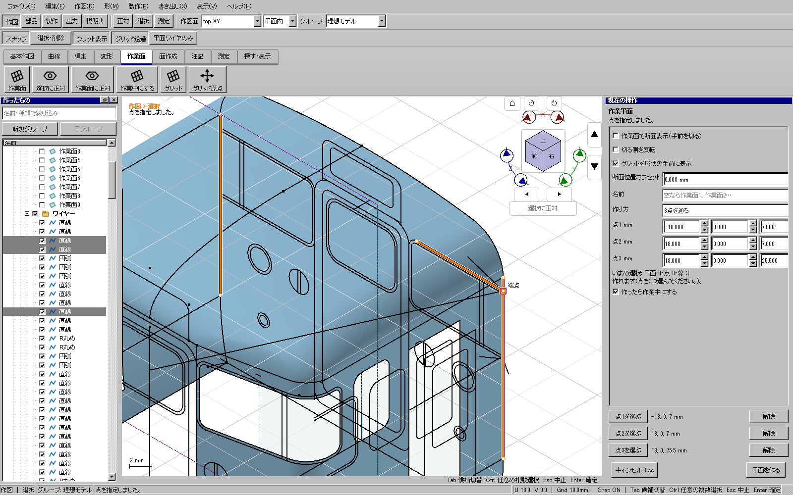

Windows全体・配布版検証済み。ソース 4c08627c9。GitHub 更新1。
「点を選ぶ」で待機していても、通常選択モードのマウス分岐が線の選択へ流れていました。従来の作業面試験はClickAtを直接呼んでおり、この経路を見落としていました。
点指定待ちを共通のクリック経路で優先し、選択・測定・作図中でも指定できます。端点・中点・実3D交点・独立した作図点へ吸着した座標を、その高さのまま使用します。ホバーとクリックは同じ処理で点を求め、非表示の入力は除外します。
空間上の位置が決まらない場合は原点を補わず待機を続け、理由を表示します。点入力と要素参照は相互排他とし、Esc・別ツールへの切替で古い入力を解除します。点を取得した後の案内と一時ホバー状態も解除します。元の線・面の定義や保存形式は変更しません。
3Dで拾える吸着先がない場所では、現在の作業面上の位置を使います。作業面と視線が平行で位置が決まらないときは、形状上の点を拾うか視点を変えてください。正対表示で異なる高さの点が重なるときは、右上のホームで等角表示へ戻して選びます。
| 経路 | 確認内容 |
|---|---|
| 作業面 | 3点を各ボタンから指定・点2だけ取り直し・確定・Undo/Redo・保存再読込。元の線の座標とIDを維持。 |
| 共通点指定 | 選択・測定・作図中のクリックを点入力へ渡す。3D交点・中点とホバー位置が一致。 |
| 取消と切替 | Esc、別ツール、点指定と要素参照の切替、視線と平行な面での入力保留。 |
| 他ツール | グリッド原点、2点間/3点角度の測定、出力の基準点、2本を選んだ後の線の延長。 |
| 表示 | 独立した作図点を拾える。非表示の線は拾わない。 |
115投影.kcd2の検証用コピーを開き、右パネルの各点ボタンと3Dビューの実クリックで3点を指定し、作業面を作成しました。既存290件のfeature定義に変更がないことを保存文書のJSON比較で確認しました。作成した面の原点は(-18, 0, 7) mm、法線は(0, -1, 0)です。検証入力のSHA256は 35b2db2355b60b3a2f9c201843cf6c3ed3deb388cd291dc9a56a153e90a499b3。元ファイルへ保存する操作は行いません。

正式入口 scripts/verify.py full の実行IDは point-input-release-b-20261112。事前9項目、CTest197項目（skip 0）、開発版・配布版UI各734件、従来版自己試験がすべて成功。publish 入口で同一性を照合し、配布フォルダを作成しました。配布EXEの通常起動もWindows/offscreenの継承設定の両方で成功しています。
追加6件は通常Windows表示・offscreen表示でも確認。配布EXEで添付モデルの通常UIを再生した7件が成功し、さらに「選択にズーム」・等角表示を挟む7件も成功しました。正対表示だけで異なる高さの点が重なる例では、意図した点を見分けられる向きに変更する必要がありました。
初回の赤試験は点入力2件が失敗。最初の事前検査では関数行数と明示Qtヘッダーの不足を検出して修正しました。最初の全体ゲートはホバー一時状態の追加点検で中断し、失敗記録を保全しています。成功した全体ゲートは修正版を固定して一式を再実行したものです。
配布先は out/releases/point-input-release-b-20261112/package/kachakacha_cad_next.exe。ZIPのSHA256は fc9b2407ab72953ada2f02794ddb5f6de96e133ffd7e430de323e146855f6787、EXEのSHA256は ea691599d4896b9f702062b2737a5e5056d8b1063b4942c87780ec69272e6bdf。